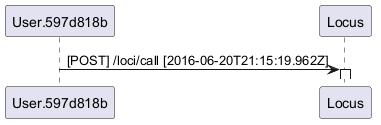

@startuml
User.597d818b->Locus++ [[{{\n "id" : "lid.17d98ccc-372c-11e6-b4ed-e62258b45be7",\n "time" : "2016-06-20T21:15:19.962Z",\n "msgType" : "http.req",\n "msg" : {\n "ua" : "com.xyz.wx2.integration.l2sip.tests.SquaredToSquaredUC.SquaredToSquaredUCCloudUriMatrixIT.testFusedCallerHuronCalleeCloudUri",\n "uid" : "597d818b-e1d1-4251-8a10-a39af5891b26",\n "tid" : "L2Sip-ITCLIENT_l2sip-cfatestFusedCallerHuronCalleeCloudUri88d38418-680b-4a41-9585-d1202b89eeea_imi:false",\n "path" : "/loci/call",\n "method" : "POST"\n },\n "srcType" : "Test",\n "src" : {\n "ip" : "166.78.8.15",\n "port" : 42538\n },\n "dstType" : "Locus",\n "dst" : {\n "ip" : "10.254.2.114",\n "port" : 61346,\n "thread" : "nioconnector93"\n }\n}}]] : [POST] /loci/call [2016-06-20T21:15:19.962Z]
@enduml